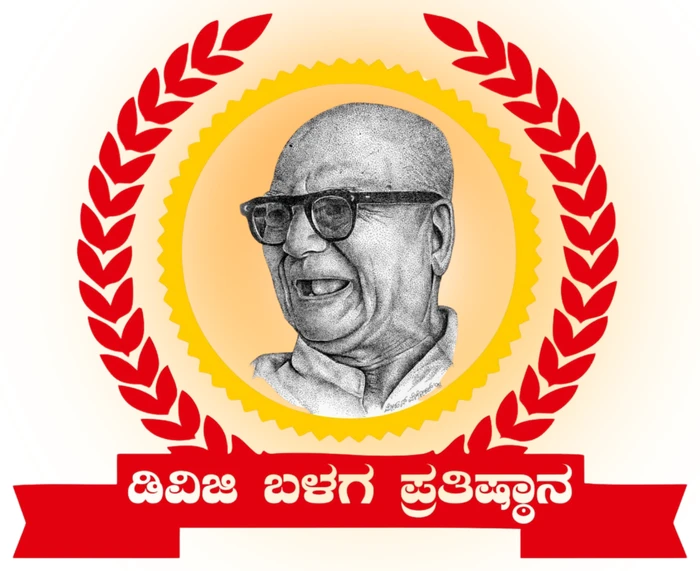

22Mar 2026
DVG Award and BGL Swamy Award ceremony
The DVG Award went to K. Natarajan, translator of Jeevanadharma Yoga and Mankuthimmana Kagga. In the afternoon, science communicator and writer Kollegala Sharma received the BGL Swamy Award.
Home / DVG Balaga Prathishthana
Literature and culture · Mysuru
Keeping D.V. Gundappa's words in daily use since 2008: weekly readings, an annual award, books, and a community that grew one Kagga at a time.
In March 2008, C. Kanakaraju and his wife Nandini started inviting friends home once a week to read Mankuthimmana Kagga together, one four-line verse at a time, and to argue gently about what each one meant.
A banker gets transferred, and the Balaga travelled with him. Every new posting meant a new chapter: Mysuru, then Pune, then Mangaluru. Teachers, doctors, software engineers and retired officers joined in. What held them together was DVG's plain, steady advice on how to live.
Today the Balaga is a Prathishthana (trust) based in Mysuru, with C. Kanakaraju as founder and convenor.
Devanahalli Venkataramanaiah Gundappa (1887 to 1975): poet, journalist and thinker, one of the great names of modern Kannada literature. His Mankuthimmana Kagga (1943) is read in Kannada homes the way some families read the Gita.
Regular sessions where members read the verses aloud and talk through their meaning and philosophy.
Recitations of the 945 verses, with a short note on meaning, shared each morning through WhatsApp groups and Facebook to thousands of readers.
Instituted in 2013 to honour outstanding work in Kannada literature and allied fields.
Named after DVG's son, the botanist and writer B.G.L. Swamy, for work that brings science closer to people.
The first title was Itinda Meti by Vasanth Kaje. DVG comics and translations of literary works are in progress.
Manasa Ullasa, a two-day camp at Mavinakere in Hassan district, brought about 50 members together for talks, music and reading.
Writers, scholars and teachers honoured by the Prathishthana since the award began in 2013.
The DVG Award went to K. Natarajan, translator of Jeevanadharma Yoga and Mankuthimmana Kagga. In the afternoon, science communicator and writer Kollegala Sharma received the BGL Swamy Award.
Dr. Gururaj Karajagi presented the award to the poet, writer and playwright, and spoke on why real growth needs a personality that spans many fields.
Accepting the award, the educationist recalled DVG's honesty, including the time he returned a pay rise to the Maharaja because he alone had received it.
Held while the Balaga's chapter was based in Mangaluru. The senior writer spoke on DVG as a humanist and as a journalist who never misused the power of the press.
Come to a reading, volunteer at an event, sponsor an award or bring a Kagga circle to your school or office. Every hand helps.
Event details drawn from reports in Star of Mysore and Deccan Herald.